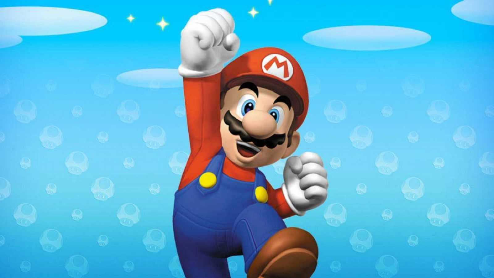
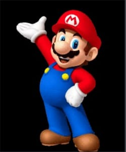
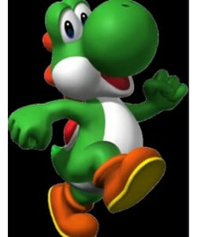
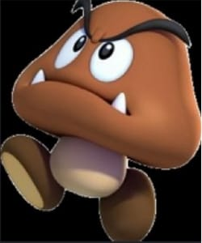
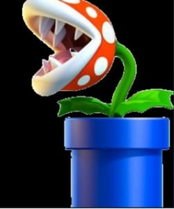
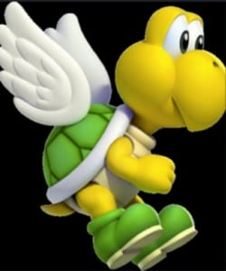
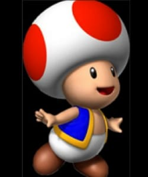
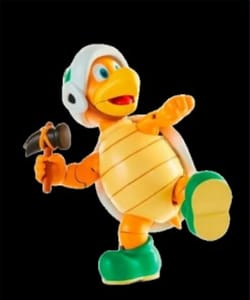

Menu
Inicio
Destacados
Novedades
Proximos lanzamientos
Personajes

Recomendados

Super Mario
Es el actor principal del juego. A medida que transcurre el juego va adquiriendo un conjunto de habilidades que le ayudan a seguir adelante y sortear las dificultades que lo ponen a prueba.

Dino Verde
Este pequeño actor se hace presente generalmente al final de cada capítulo, dado que supeligrosidad y sus habi- lidades lo ghacen un escollo dificil de sortear.

Moris Marron
Este actor con cara de pocos amigos se encuentra en casi todas las instancias del juego. No es muy peligroso, pero los hay en cantidad.

Carnicienta
Esta pequeña amiga se carac- teriza por aparecer cuando nadie la espera. De ahi su alta peligrosidad. Generalmente se encuentran en grupos que se mezclan con otros actores.

Tortuguita Alada
Una pesadilla para los jugadores. Con vuelos a distintas alturas hacen muy dificil poder sortearlas. Mas vale que te armes de pacien- cia si quieres seguir jugando.

Hong Dong
Un adversario de cuidado. Con sólo tocarlo advertiras su poder. Generalmente lo encontrarás al final del camino de cada nivel, cuando ya estes cansado y con pocas fuerzas.

Tortuguita terrestre
Un escollo dificil de sortear. Estas amiguitas si bien no son tan peligrosas como sus parientas, las hay en gran cantidad lo que las hace igualmente peligrosas. Si las pisas, se duermen por unos segundos. pero... Ten cuidado!!
Volver